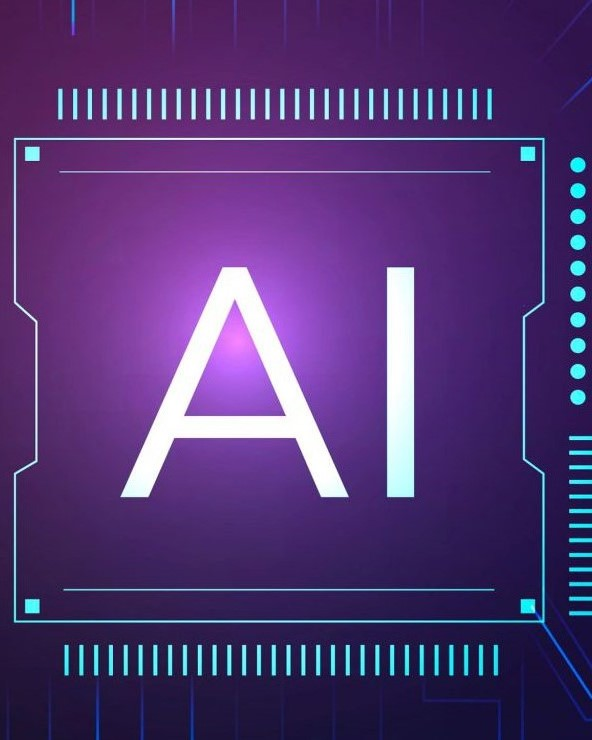

Inteligência Artificial (IA) é um campo da ciência da computação que busca desenvolver sistemas capazes de realizar tarefas que, de alguma forma, exigem inteligência humana, como aprender, raciocinar, tomar decisões, reconhecer imagens e fala, entre outras. A IA é baseada em algoritmos e modelos matemáticos que tentam replicar a capacidade de pensamento e de aprendizado humano. Existem diversas técnicas e abordagens para a construção de sistemas de IA, incluindo as redes neurais, as árvores de decisão, as lógicas difusas e os algoritmos de aprendizado de máquina. A IA tem aplicações em diversos setores, como a saúde, a indústria, o comércio, a segurança, a educação, entre outros. Algumas das principais aplicações de IA incluem assistentes virtuais, sistemas de reconhecimento de voz e de imagens, carros autônomos, chatbots, sistemas de recomendação, detecção de fraudes, análise de dados, entre outras. A IA é uma área em constante evolução e tem grande potencial para transformar a forma como vivemos e trabalhamos.
Realidade Virtual

A realidade virtual (RV) é uma tecnologia que permite a criação de ambientes simulados em 3D, nos quais o usuário pode interagir e sentir como se estivesse imerso em um mundo virtual...
Publicado por Richard Macedo
18/03/2023

Realidade aumentada(RA)

A realidade aumentada é uma tecnologia que permite a sobreposição de elementos virtuais (como imagens, informações, gráficos, animações e modelos 3D) sobre o mundo real...
Publicado por Richard Macedo
18/03/2023
.png)
Internet das coisas(IoT)

A Internet das Coisas (IoT) é uma rede de dispositivos interconectados que podem coletar, transmitir e analisar dados. Essa tecnologia permite que objetos físicos, como eletrodomésticos, carros, sensores e outros dispositivos, se comuniquem e compartilhem informações entre si por meio da internet...
Publicado por Richard Macedo
18/03/2023
Inteligência artificial

Inteligência Artificial (IA) é um campo da ciência da computação que busca desenvolver sistemas capazes de realizar tarefas que, de alguma forma, exigem inteligência humana, como aprender, raciocinar, tomar decisões, reconhecer imagens e fala, entre outras. A IA é baseada em algoritmos e modelos matemáticos que tentam replicar a capacidade de pensamento e de aprendizado humano...
Publicado por Richard Macedo/p>
18/03/2023
Impressão 3D

Impressão 3D é uma tecnologia que permite a criação de objetos físicos a partir de um modelo digital, utilizando uma impressora 3D. A impressora 3D usa camadas sucessivas de material (plástico, metal, resinas, entre outros) para construir o objeto, seguindo as instruções do modelo digital...
Publicado por Richard Macedo
18/03/2023